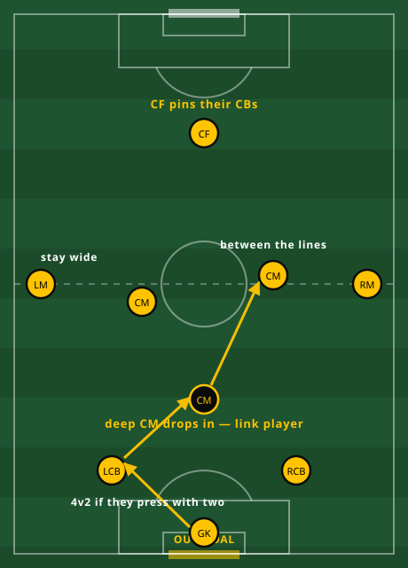
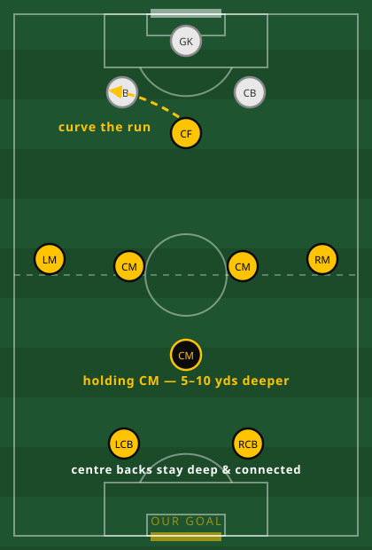
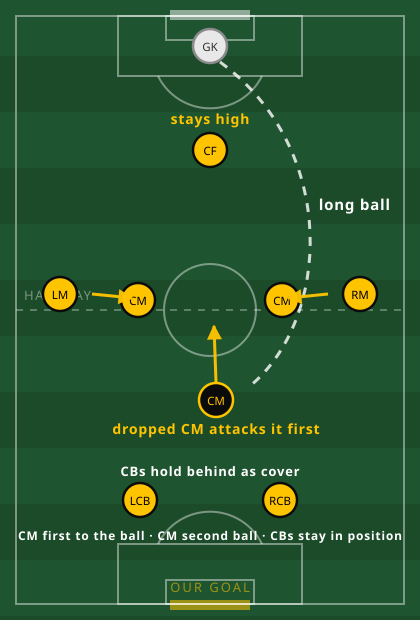

Goal kicks
Building from our own goal kicks, and how we press theirs.
In possession
We play through their first press, not over it. Three central midfielders give us overloads. Move them until a lane opens, then go. Only go long when they've shut everything down.

Two CBs plus the deep CM against their two = a 4v2 with the keeper behind. Someone is always free.
Don't force a short pass into a marked player. Go to the rehearsed direct pattern:
Out of possession
When their keeper has it, we press together, force one side, and try to win the ball high enough to score within a few passes. Not a flat five — one CM starts deeper so we've got cover and someone attacking long balls forwards.


Because he starts behind the play, he attacks long balls moving forwards instead of backpedalling. That wins more headers and keeps both centre backs where they should be — behind him, as insurance if the first ball is lost.